一套不敗的
60 分手沖法。
先不追求一杯到位，先把底子練穩。這套 SOP 帶你理解原理、照著流程練習，再透過參數和品飲，找到下一杯的調整方向。
不是只背一份配方，是學會怎麼思考一杯咖啡。
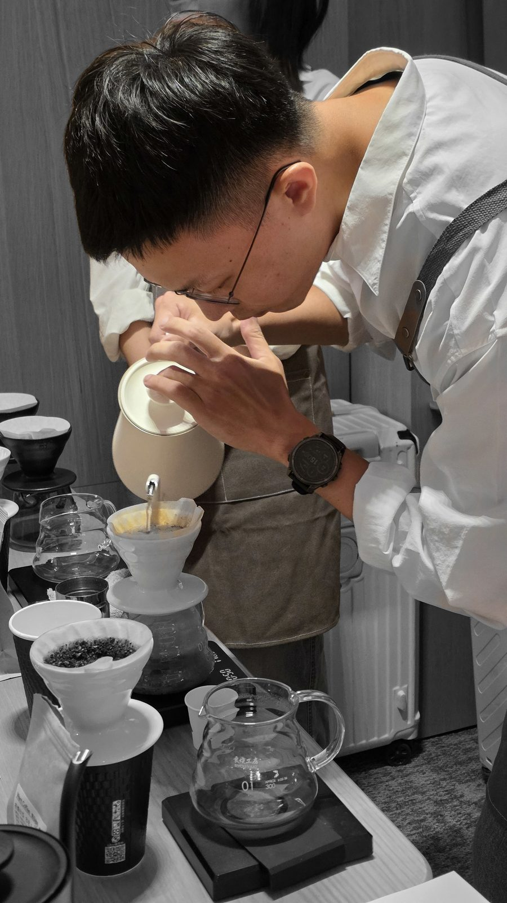
- 1
準備好起點
秤豆與水、選擇研磨，先把這杯的計畫記下來。
- 2
跟著流程沖
練習注水，觀察水流與時間，讓每一步都有依據。
- 3
喝一口，再調整
從杯中的酸、甜、苦找線索，想一想下一杯怎麼改。
一堂給咖啡新手的四小時體驗課。
味道總是很苦，或是不清楚怎麼開始？
從一套穩定的 SOP 開始，學懂原理、玩玩參數，
把喜歡的味道和練習的底氣，一起帶回家。
至少 3 種豆實作，送 100g 上課豆回家練。

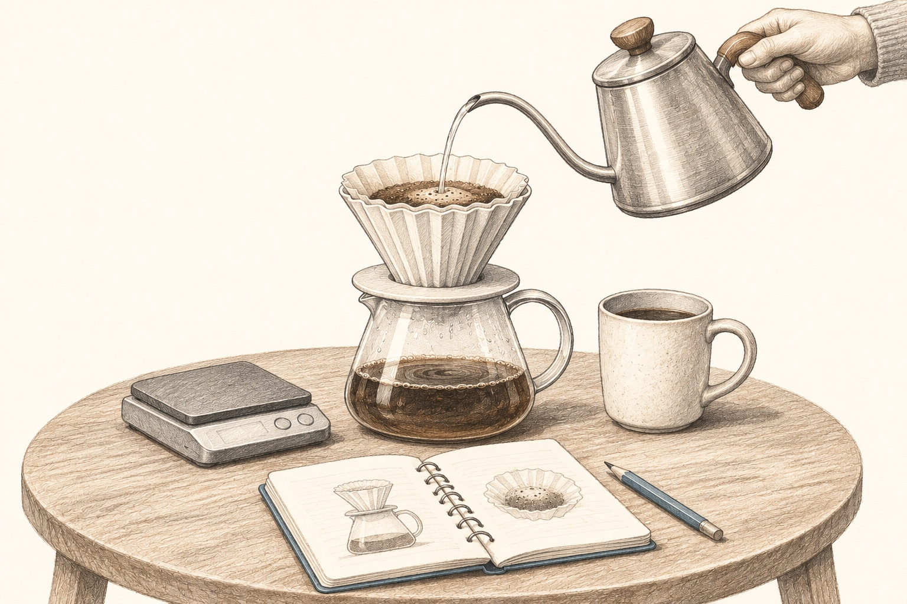
設計給初學者，有趣的咖啡沖法，從你的好奇心開始。
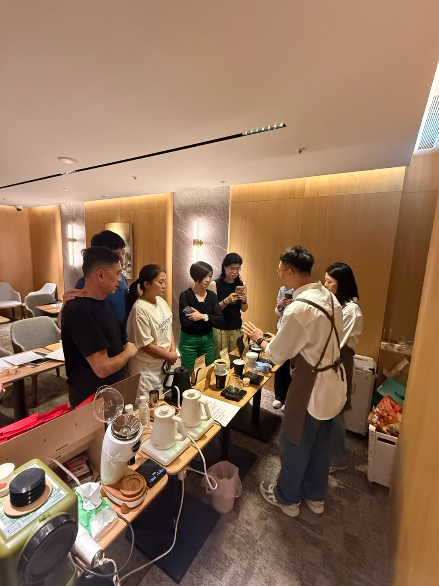
不用先買器材、背術語。帶著好奇心，從認識器材、拿起手沖壺開始。
一起喝、一起找線索。分辨豆子、研磨與沖煮的影響，讓下一次調整有方向。
把流程與參數串起來。練一套可以重複的 SOP，再寫下屬於自己的沖煮計畫。
留四個小時，聞香、注水、聊天、喝咖啡。先體驗，再決定怎麼把這份喜歡帶回生活。
把「憑感覺」變成「我知道怎麼做」。
先建立可以練習的底子，再長出自己的風格。
先不追求一杯到位，先把底子練穩。這套 SOP 帶你理解原理、照著流程練習，再透過參數和品飲，找到下一杯的調整方向。
不是只背一份配方，是學會怎麼思考一杯咖啡。

秤豆與水、選擇研磨，先把這杯的計畫記下來。
練習注水，觀察水流與時間，讓每一步都有依據。
從杯中的酸、甜、苦找線索，想一想下一杯怎麼改。
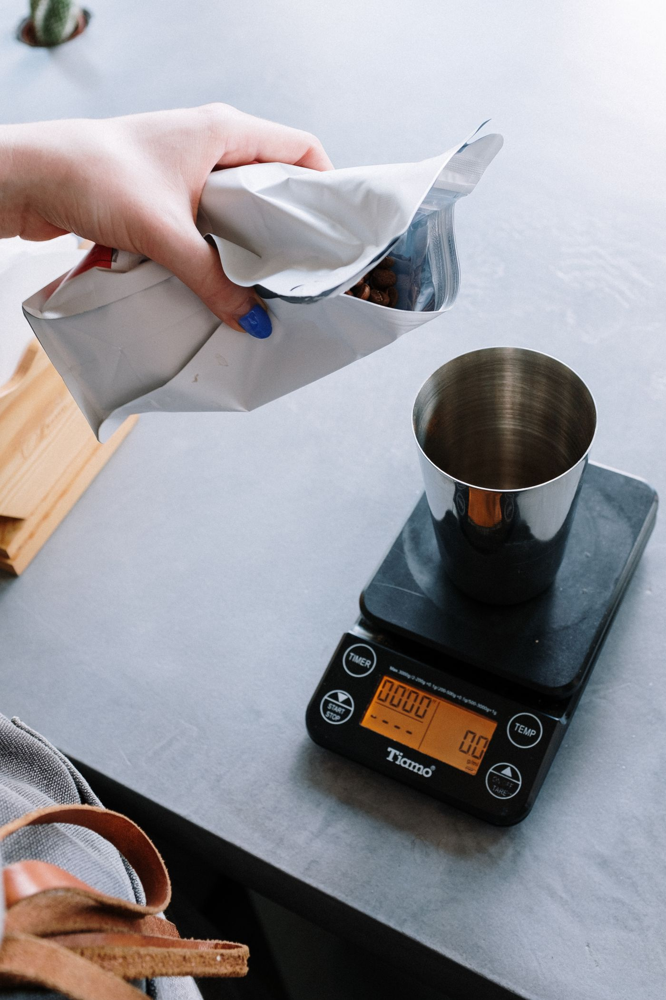
水溫、研磨、豆量、水量與時間，不再只是一串數字。練習記錄、比較，一次改一個變因，知道自己為什麼這樣沖。
玩玩四個參數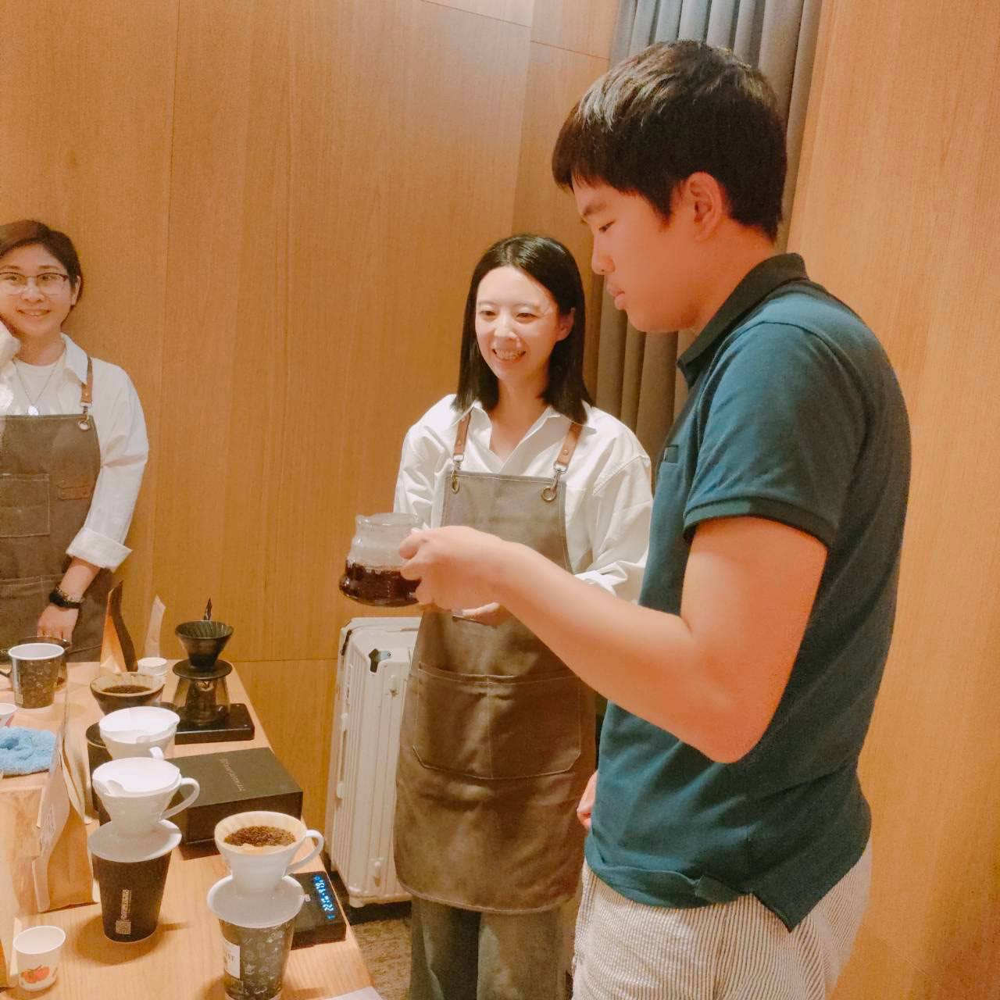
從豆子本身、處理法與烘焙，到沖煮時的萃取。用至少三種豆子實際比較香氣、酸甜與口感，練習把喜歡的味道說清楚。
聞一聞、喝一口、聊一聊。這堂課，也是一場開心的味覺探索。
不急著背標準答案。
先理解四個參數，再用一杯杯練習找到自己的答案。
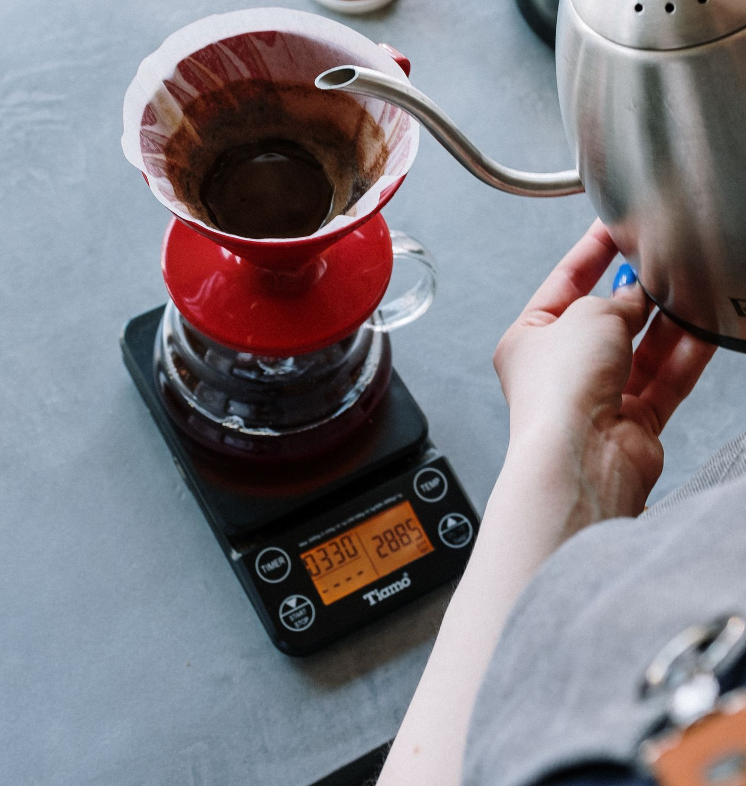
水溫會影響萃取速度，但不是越熱越好。用同一支豆子、固定其他條件，喝喝看溫度改變時，香氣與味道有什麼不同。
課堂練習：先秤準豆與水，記下溫度，品飲後再決定下一杯。
這裡先認識方向，真正的差異，我們在課堂裡一起喝懂。
有示範、有動手、有喝有聊。
不是坐著聽完，而是真的練過一輪。
把注水分成五次，觀察、品飲與比較差異，先建立對萃取的感覺。
理解剛剛喝到的差異，再跟著 SOP 流程講義動手練，把每一個步驟練穩。
把水溫、研磨、豆量與時間放進沖煮計畫，練習朝自己想要的風味方向調整。
至少三種豆實作，把學到的方法帶到不同豆子，自己品飲、比較，判斷下一杯怎麼調。
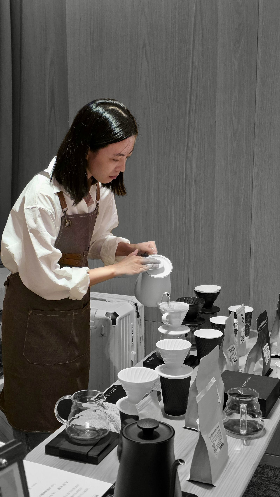
以世界冠軍粕谷哲的 4:6 沖法為基礎，配合今天學到的參數，整合練習，朝自己理想的 80+ 分好咖啡前進。
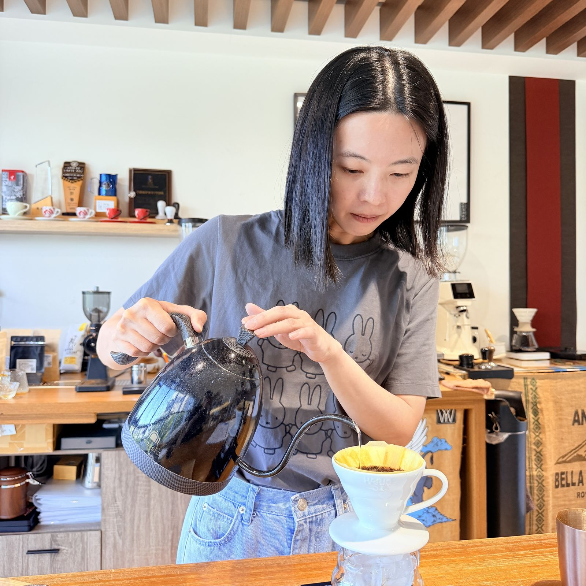
送你一包 100g 上課使用的咖啡豆，讓今天學到的，回家就能繼續玩。
素描為練習情境示意；課後帶回 100g 咖啡豆與 SOP 流程講義。
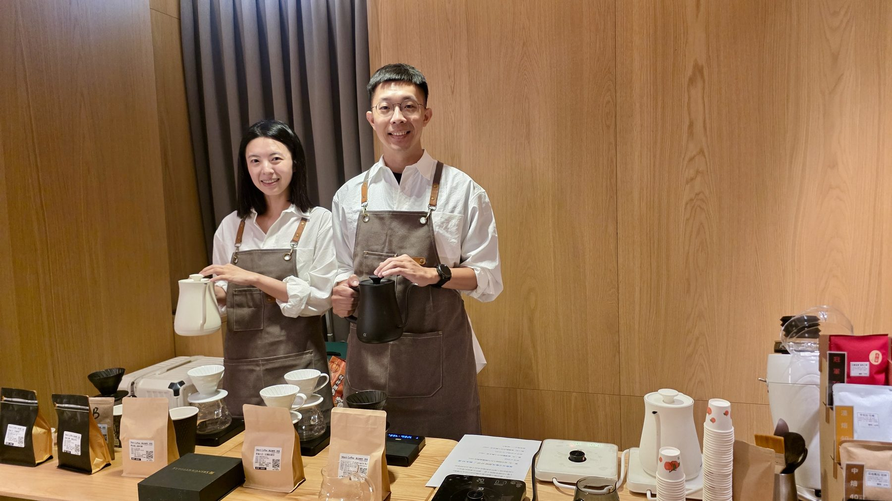
學咖啡，是豐富自己的經驗。找答案是過程，不用一開始就什麼都會。
我們想陪你把基礎練穩，也保留一點玩心。培養一個興趣，滋養你的好奇心，讓手沖成為日常裡一件開心的事。
來 LINE 和我們聊聊不用準備滿分的自己，
準備一點好奇心就可以。
日期、地址與課前準備，在 LINE 一起確認。
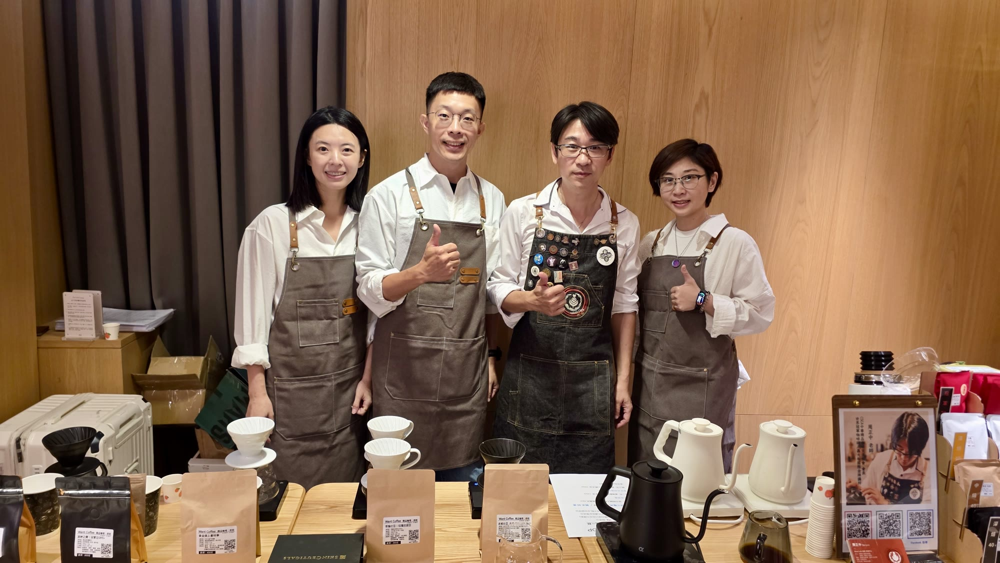
費用包含：至少三種豆的實作、SOP 流程講義，以及 100g 上課豆帶回家練習。
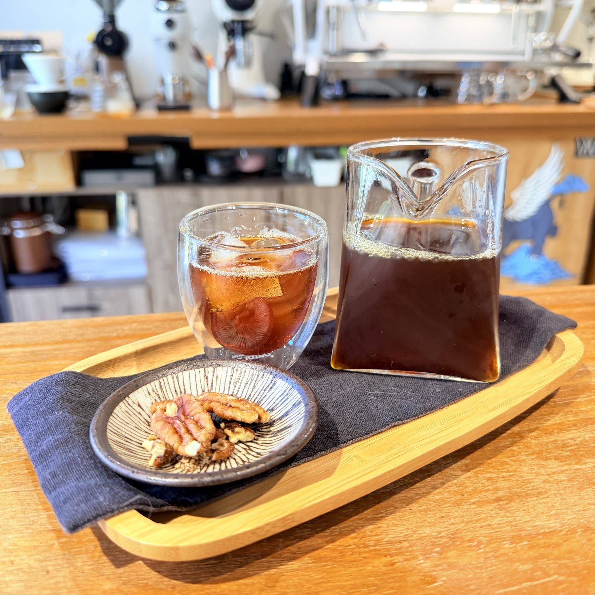
可以，這堂課就是為咖啡新手與想重新打好基礎的人設計。從認識器材、拿壺、注水到品飲，一步步陪你練，不需要先懂專業術語。
我們會陪你從味道找線索，認識豆子、研磨、水溫、粉水比與時間的關係。先有穩定的 SOP，再練習一次調一個變因，讓改善不只靠運氣。
每人四小時體驗、阿勳與露露親自授課、至少三種咖啡豆的實作練習、SOP 流程講義（可充分做筆記），以及一包上課使用的咖啡豆 100g，讓你回家練習。
它是一套先把底子練穩的手沖 SOP：理解原理、照著流程做、記下參數，再從品飲回饋調整。「60 分」是先建立可靠的起點，不用一開始就追求完美；不同豆子與器材，再一起練習怎麼調。
可以，一人也可開班。目前課程地點為林口。透過 LINE 告訴我們方便的時段，一起確認日期、詳細地址及課程安排。
器材、課前準備與改期安排，報名前在 LINE 一起確認。我們會先把安排聊清楚，再決定適合你的上課時間。